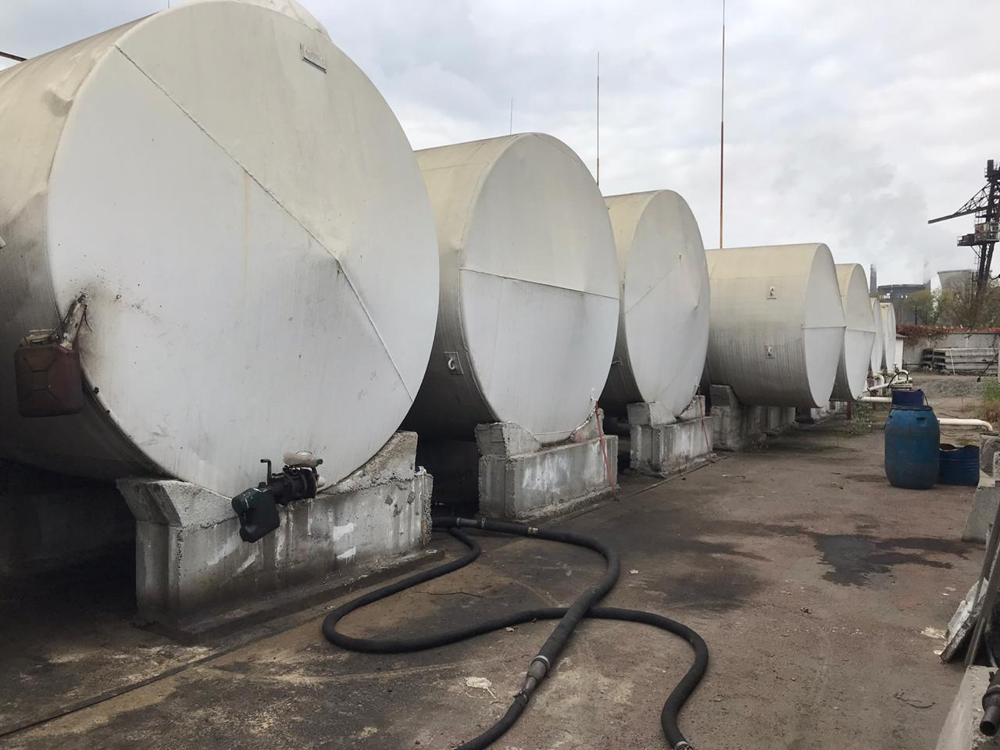

Национальная полиция провела обыски и заблокировала работу нелегального нефтеперерабатывающего завода (НПЗ) в Кривом Роге. Об этом сообщает управление Нацполиции в Днепропетровской области, передает БизнесЦензор .
Согласно сообщению, 10 февраля сотрудники полиции в рамках открытого уголовного производства под процессуальным руководством местной прокуратуры №3 провели санкционированные обыски на территории нефтеперерабатывающего завода и на территориях незаконной сети АЗС в различных районах Кривого Рога.
